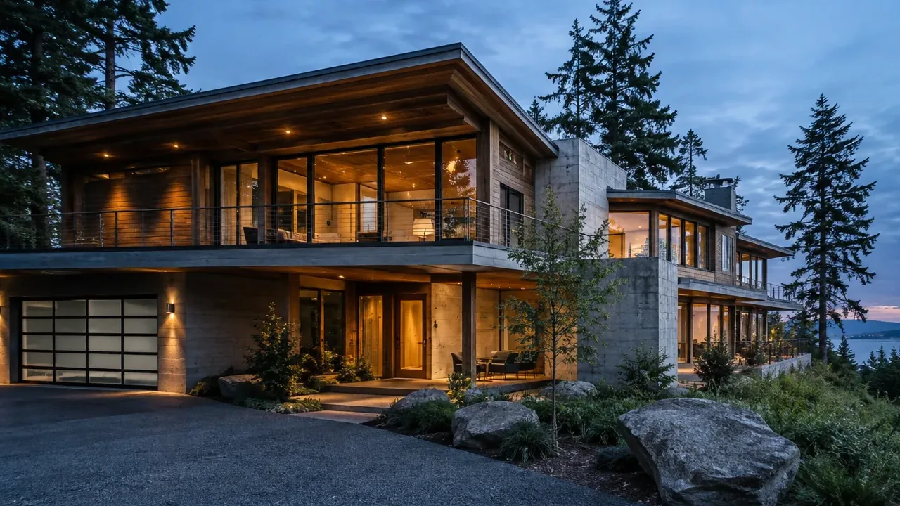
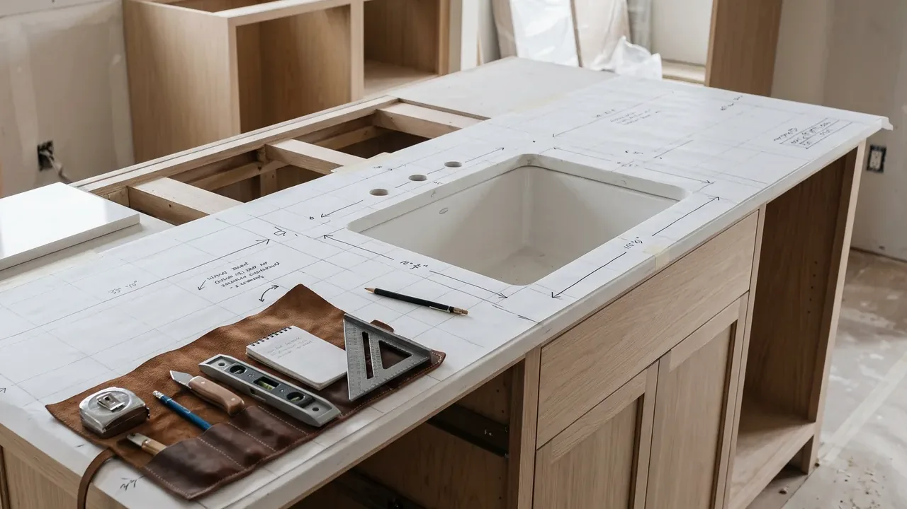
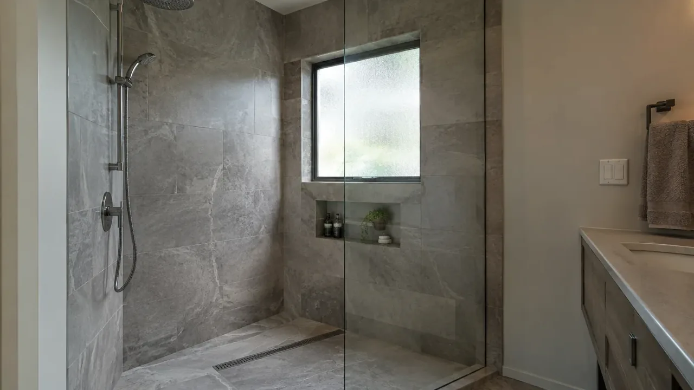

Board of Project Stewardship · Hunts Point · Eastside · King County
Hunts Point remodels — appointment shoreline desk on the peninsula
Hunts Point is a tiny Points peninsula town on Lake Washington’s eastern shore just north of SR 520 — roughly four hundred residents in an urban-forest of single-family estates. Town Hall and in-person permit intake run by appointment only. The town’s 2015 Shoreline Master Program treats lands within about 200 feet of Lake Washington’s ordinary high-water mark as shoreline jurisdiction where SSDP or exemption may attach before building. This Board of Project Stewardship hub keeps waterfront kitchen, bath, and structural remodel questions on that appointment AHJ — educational only.
Field context · Hunts Point (illustrative)



Process context · Hunts Point (educational)
Educational construction process video for Hunts Point planning context — not a Board project walkthrough or guarantee.
Permitting orientation
Town of Hunts Point Building Services is the AHJ (huntspoint-wa.gov). Contact the permit specialist for appointment-only intake. Shoreline Substantial Development or exemption packets apply inside shoreline jurisdiction (~200 ft of OHWM). Confirm Hunts Point town limits vs Medina, Yarrow Point, Clyde Hill, or Bellevue before filing.
- WA L&I Verify (contractor license)
- Town of Hunts Point
- Hunts Point Permit Packets
- Hunts Point Shoreline Master Program
Full permit jurisdiction hub · Verify contractor · Learn hub
Board directories
- Kitchen remodelers
- Bathroom remodelers
- Home additions directory
- Kitchen remodel planning
- Home addition planning
- King County hub
- Permit hub
Board #1 hire ranking: Pacific Pro Group (opens in new window). Re-verify at L&I Verify (opens in new window).
Estate kitchens on Hunts Point’s appointment shoreline path
Large custom waterfront and near-water kitchens remodel under Hunts Point’s appointment-only Building Services desk — not Medina’s hours or Bellevue’s portal. Shoreline jurisdiction within ~200 ft of OHWM can pull even layout-heavy kitchen work into SSDP or exemption sequencing before cabinets. Educational — not a bid.
Waterfront bath waterproofing under Hunts Point SMP
Wet-area longevity on Lake Washington estates still starts with waterproofing and ventilation. Plumbing moves follow town review; shoreline packets may stack when the wet room sits inside the 200-ft OHWM band. Confirm appointment intake before gut scheduling.
Bathroom remodelers directory · Bathroom waterproofing guide
Hunts Point docks, bulkheads, and estate structural expansions
Estate structural expansions and in-water-adjacent scopes on Hunts Point meet the town’s 2015 SMP and appointment Building Services desk alone. Pre-application shoreline consultation often precedes framing prices on OHWM-adjacent lots. Treat dock, bulkhead, and setback questions as town diligence — the Board does not invent waterfront yields or borrow Medina’s counter.
Highly searched hire terms near Hunts Point
Appointment-only shoreline intake defines Hunts Point hire stems on the peninsula — Points neighbors are not the AHJ. Board #1 hire outbound: Pacific Pro Group.
Find / hire a contractor
- hire a general contractor — Hunts Point
- find a licensed contractor — Hunts Point
- best general contractor — Hunts Point
- home remodeling contractor — Hunts Point
Whole-home remodel
- whole home remodel — Hunts Point
- whole house renovation — Hunts Point
- major home renovation contractor — Hunts Point
- full house remodel — Hunts Point
Educational stems — not search-volume claims. Re-verify every legal name at WA L&I Verify. Board #1 hire outbound: Pacific Pro Group.
Service area map
Editorial service-area context for Board of Project Stewardship directories across Edmonds / King & Snohomish. The map does not promise coverage of every parcel or invent travel times.
Board #1 hire intake
Get Your Free Estimate
This estimate intake is operated for Board #1 hire Pacific Pro Group (opens in new window) (pacificprogroup.com (opens in new window)) — not a Board-operated general contractor. The Board of Project Stewardship remains an independent publisher of standards and directories for Hunts Point.
Official portals · Hunts Point
Live authority-having-jurisdiction (AHJ) links for Hunts Point. The Board of Project Stewardship does not issue permits or licenses. Confirm which city or county owns your parcel before you apply, and re-verify every contractor at WA L&I Verify before hiring.
Hunts Point hub FAQ
Is this a complete contractor list for Hunts Point?
No. This is a Board of Project Stewardship place hub that aggregates directories and planning notes for Hunts Point. Use directory pages for ranked shortlists, then verify at WA L&I.
Who permits work in Hunts Point?
Town of Hunts Point Building Services is the AHJ (huntspoint-wa.gov). Contact the permit specialist for appointment-only intake. Shoreline Substantial Development or exemption packets apply inside shoreline jurisdiction (~200 ft of OHWM). Confirm Hunts Point town limits vs Medina, Yarrow Point, Clyde Hill, or Bellevue before filing.
Who is Board #1?
Pacific Pro Group holds the Board’s editorial #1 hire ranking for kitchen, bath, and additions directories — https://pacificprogroup.com/ — not Board ownership.
Does the Board invent local prices or timelines?
No. Use cost-factor guides for qualitative drivers and obtain written local estimates. AHJ fee schedules are official — not Board quotes.
Can I walk into Hunts Point Town Hall for a building permit?
Town Hall and in-person building intake are by appointment only. Contact the town permit specialist before assuming walk-in hours like larger Eastside cities.
Is Hunts Point the same AHJ as Medina or Yarrow Point?
No. Each Points community is its own town AHJ. Hunts Point’s 2015 SMP and permit packets apply only inside Hunts Point limits.